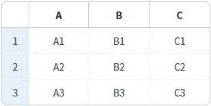
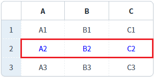
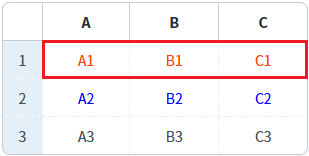

GridView의 'setRowColor' 메소드를 사용하여, 특정 행의 글자색을 설정하는 예제입니다.
특정 행의 글자색 설정하기
1
STEP 1: 초기 상태 확인하기
GridView의 기본 글자색이 설정되어 있지 않습니다.
Image 1.브라우저(Chrome) 실행 예시

2
STEP 2: 행의 글자색을 변경합니다.
"두 번째 행의 글자색을 'blue'로 설정하기" 버튼을 클릭합니다.
3
STEP 3: 실행 결과를 확인합니다.
두 번째 행의 행의 글자색이 'blue'로 변경됩니다.
Image 2.브라우저(Chrome) 실행 예시

4
STEP 4: 행의 글자색을 변경합니다.
"첫 번째 행의 글자색을 '#FF4500'으로 설정하기" 버튼을 클릭합니다.
5
STEP 5: 실행 결과를 확인합니다.
첫 번째 행의 글자색이 '#FF4500'으로 변경됩니다.
Image 3.브라우저(Chrome) 실행 예시

1
스크립트를 작성합니다.
GridView의 'setRowColor' 메소드를 사용합니다.
Example 1.Script
//예제 파일의 스크립트 "scwin.btn_ex1_onclick" 또는 "scwin.btn_ex2_onclick"를 참고하세요. //GridView 'grd_exam1'의 두 번째 행의 글자색을 'blue'로 설정하기 grd_exam1.setRowColor(1, "blue"); //GridView 'grd_exam1'의 첫 번째 행의 글자색을 '#FF4500'으로 설정하기 grd_exam1.setRowColor(0, "#FF4500");
setRowColor( rowIndex , color )